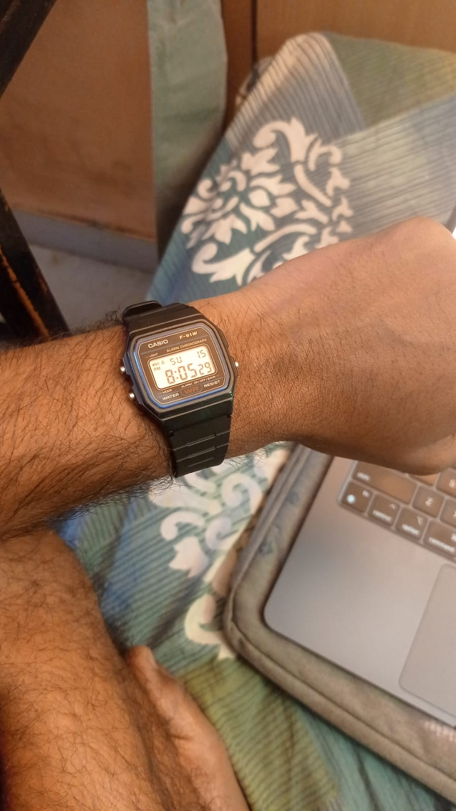

in praise of casio f-91w

the only thing i like about casio f91w is it's just only and only watch, nothing more than that. it's lightweight ( 21 g), sleek, made of plastic, cheap, no fear of damage because its so rugged and cheap, waterprooof, battery runs for 7+ years.
it has not very advanced feature like bluetooth , call, big dial watch, heart beat tracker, running tracker etc anything. it has only feature the watch should have like time, stopwatch, very slight and minimal green light that can only be used in very essential dark place, 24 hour clock, alarm, day, date that's it, this is more than enough for me to using watch.
btw nowadays it's become fashion or trend to wear casio f91w, accidently i also come across this trendy time but i not influenced by some sort of fashion but i was simply looking for a reliable, no-nonsense watch. as a need for only watch i come across subreddit see all the people suggesting me a=casio f91 w.
i'm glad that i gave a try, it's worth it...